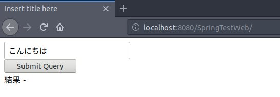
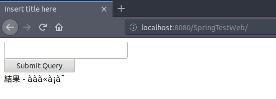
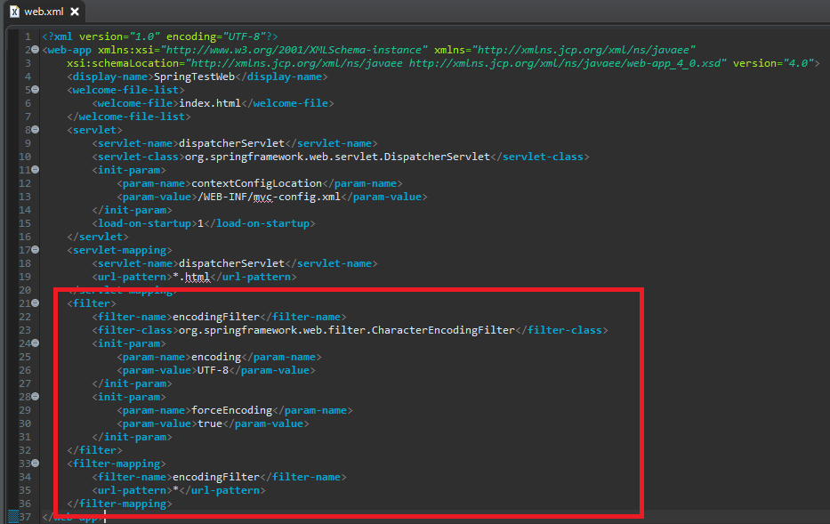
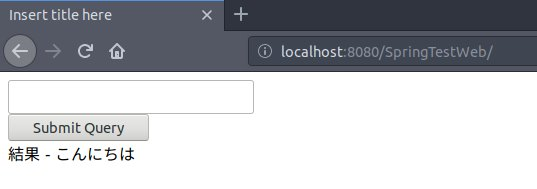

[Java] Spring web frameworkで発生する文字化けのEncoding設定
こんにちは。明月です。
以前、初めにプロジェクトを立ち上がることに関して説明しなければならなかったですが、漏れがありまして追加します。
一応ウェブサービスの流れと言うとブラウザから要請するとウェブサーバは要請されたホスト名とパラメタによって応答ヘッダやHtmlデータを作成して返事します。
サーバからブラウザに返事する時に文字エンコードは「jsp」で設定するので、問題ないですが、ブラウザからサーバに要請する時には別途で設定しないと文字化けになります。
<%@ page language="java" contentType="text/html; charset=UTF-8" pageEncoding="UTF-8"%>
<!-- サーバからブラウザにエンコーディングする設定はここでします。 -->
<!DOCTYPE html>
<html>
<head>
<meta charset="UTF-8">
<title>Insert title here</title>
</head>
<body>
<form method="post">
<input type="text" name="paramdata"><br />
<input type="submit">
</form>
結果 - ${Data}
</body>
</html>
package controller;
import javax.servlet.http.*;
import org.springframework.web.bind.annotation.*;
import org.springframework.stereotype.Controller;
import org.springframework.ui.ModelMap;
@Controller
public class Main {
@RequestMapping(value = "/index.html", method = RequestMethod.GET)
public String indexget(ModelMap modelmap, HttpSession session, HttpServletRequest req, HttpServletResponse res) {
//GETタイプの場合は「Data」パラメタに空を送る。
modelmap.addAttribute("Data", "");
return "index";
}
@RequestMapping(value = "/index.html", method = RequestMethod.POST)
public String indexpost(@RequestParam String paramdata, ModelMap modelmap, HttpSession session, HttpServletRequest req, HttpServletResponse res) {
// POSTタイプの場合はSubmitされたデータを「Data」パラメタに送る。
modelmap.addAttribute("Data", paramdata);
return "index";
}
}


上の例で「こんにちは」と日本語でSubmitしましたが、結果は文字化けになりました。「結果 - 」と言うことは文字化けしなく、綺麗に表示されますね。
その理由はサーバからブラウザは文字化けがないですが、ブラウザからサーバ側に送信する時文字化けになると意味です。
「web.xml」の設定をみましょう。

<filter>
<filter-name>encodingFilter</filter-name>
<filter-class>org.springframework.web.filter.CharacterEncodingFilter</filter-class>
<init-param>
<param-name>encoding</param-name>
<param-value>UTF-8</param-value>
</init-param>
<init-param>
<param-name>forceEncoding</param-name>
<param-value>true</param-value>
</init-param>
</filter>
<filter-mapping>
<filter-name>encodingFilter</filter-name>
<url-pattern>*</url-pattern>
</filter-mapping>
上のフィルタを追加しましょう。前日でフィルタに関して説明しました。
link - [Javaスタディ- 50] Web Spring frameworkでfilter設定
フィルタで適用するので全コントローラに反映しますね。「url-pattern」で「*」をしましたが、必要ならパターン別でエンコーディングを変わることも出来ます。
パラメタでは「UTF-8」を入れました。

文字化けがなくなりました。
「Study / Java」の他投稿
- [Java] Java servletでインスタンスを初期する方法2019/10/17 07:15:48
- [Java] Spring web frameworkで発生する文字化けのEncoding設定2019/10/16 07:32:55
- [Java] Web Spring frameworkでfilter設定2019/10/15 20:12:35
- [Java] Web serviceのweb.xmlでエラーページ設定2019/10/14 20:13:44
- [Java] JPAのDAOをFactoryパターンで管理する方法2019/10/13 22:55:52
- [Java] JPAのSpring frameworkで依存性注入する方法2019/10/13 00:40:08
- [Java] JPAでDAOを生成する方法2019/10/11 07:30:14
- [Java] JPAでトランザクションの使用方法とオブサーバーパターンで共通トランザクション関数を作り方2019/10/10 07:29:43
- [Java] JPAのQuery を作り方2019/10/09 07:34:08
- [Java] JPAのEntityクラス設定(Cascade, fetch)2019/10/08 07:43:33
- [Java] JPAでpersistance.xml設定とentityクラス設定(@GeneratedValue設定)2019/10/07 07:38:13
- [Java] EclipseでJPAフレームワーク設定する方法2019/10/04 19:24:43
- [Java] Web spring frameworkのJSPで使う言語 JSTL - XML2019/10/03 20:02:06
- [Java] Web spring frameworkのJSPで使う言語 JSTL - 関数、データベース2019/10/02 21:00:22
- [Java] Web spring frameworkのJSPで使う言語 JSTL - コアー、フォーマッティング2019/10/01 21:48:08
最新投稿
- [Python] 20. stringフォマード(Formatting)と補間法(interpolation)2020/06/23 19:03:21
- [Python] 19. 非同期IOのasync/await(asyncio)を使う方法2020/06/22 18:10:12
- [Python] 18. ネットワーク(Socket)通信する方法2020/06/18 19:53:56
- [Python] 17. スレッド(Thread)とロック(lock)、そしてデッドロック(deadlock)2020/06/18 00:19:45
- [Python] 16. IO(ファイル読み取り、書き込み)を扱う方法2020/06/16 18:37:00
- [Python] 15. クラスを継承する方法2020/06/15 18:20:07
- [Python] 14. クラスプロパティ(Property)2020/06/12 17:45:13
- [Python] 13. クラス関数(class method)とダック・タイピング、そして特殊メソッド2020/06/11 19:42:29
- [Python] 12. クラス(Class)を使う方法2020/06/10 19:33:33
- [Python] 11. デコレーター（Decorator）を使う方法2020/06/09 17:27:18
- [Python] 10. モジュールとパッケージ(import)2020/06/08 19:07:50
- [Python] 09. 例外処理する方法2020/06/05 17:11:47
- [Python] 08. ジェネレータ(Generator)2020/06/04 18:46:08
- [Python] 07. globalとnonlocal2020/06/03 20:34:49
- [Python] 06. 関数(function) - インライン関数、callbak、ラムダ(lambda)そしてクロージャ2020/06/02 20:51:22